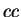
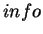
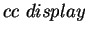
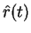
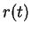
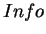
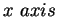
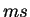

Display Information Value and Correlation Coefficient window provides three display options:  display,  display, and all the tol val vs. smoothing window. These options are implemented as a popup menu in this window. For example, if the popup menu is chosen to show , the predicated between the calculated  and the actual , and the original between two PSTHs are shown in the Figure 3.14. Figure 3.15 shows the predicted coherence and the original coherence for the auditory demo data if the popup menu is chosen to show  display.
For the display option,  in Figure 3.14 denotes smoothing filter width in the unit of . The in Figure 3.15 of the display window is frequency in the unit of Hz. The green dot line in the display window is the upper bound of information value and the red dot line is the lower bound. The tolerance value in the text field of Tol val is used for the predicted results displayed in the left panel. If more than one Tol value is used before, the user can use the Prev tolval or the Next tolval button to show the corresponding plots for the predicted results.